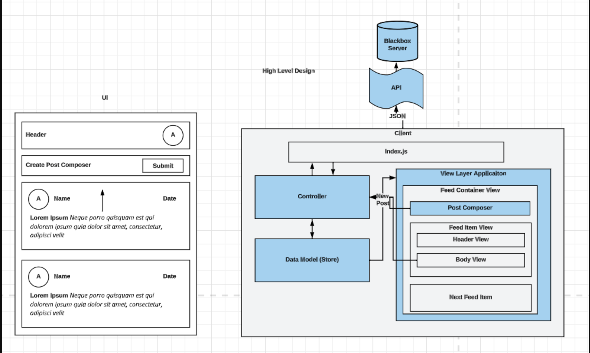
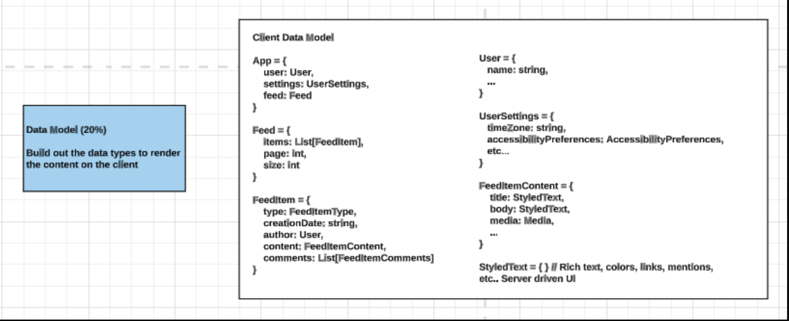

Functional Requirement
Functional requirements are the essential elements that the product cannot function without. They dictate the core features and functionalities of the system, ensuring that users can complete the fundamental tasks effectively. Here are some key aspects to consider:
-
Core Features vs. Good-to-Have
- Identify the Core Flows: Begin by discerning the primary actions users need to perform within your application. These are the core features that should always work seamlessly.
- Good-to-Have Features: Beyond the essentials, there are often numerous additional features that enhance the user experience. For instance, in a social media application like Facebook, think about the various post formats users might want, such as text-based posts, photo uploads, video uploads, polls, location check-ins, and more.
-
Device and Platform Support
- Device and Platform Considerations: Determine which devices and platforms your application needs to support. Will it be accessible on desktops, tablets, and mobile devices? Ensuring a consistent user experience across various platforms is crucial.
-
Offline Support
- Offline Functionality: Assess whether your application requires offline support. Depending on the nature of your product, users may need to interact with it even when they have no internet connectivity.
-
User Demographics
- User Personas: Define the main users of your product. Understanding your target audience's needs, preferences, and pain points is vital for designing a user-centric frontend.
Non-Functional Requirements
In addition to functional requirements, non-functional requirements are enhancements that improve the product but are not strictly essential for its basic usability. These often focus on aspects such as performance, scalability, security, user experience, and more:
-
Performance
- Performance Metrics: Specify performance requirements, including how fast pages should load, how responsive user interactions must be, and acceptable latency thresholds.
-
Security
- Security Measures: Consider security requirements, which encompass safeguarding user data, implementing authentication and authorization mechanisms, and protecting against common vulnerabilities like Cross-Site Scripting (XSS) and SQL Injection.
-
Availability
- Availability Goals: Define availability requirements, including uptime targets and strategies for mitigating downtime, such as load balancing and redundancy.
-
Observability
- Monitoring and Observability: Plan for observability by integrating tools and techniques for monitoring application health, logging, and error tracking.
-
Tracking
- Analytics and Tracking: Establish tracking mechanisms to gather user data and insights, which can inform future enhancements and improvements.
-
Accessibility (A11y)
- Accessibility Standards: Ensure that your frontend adheres to accessibility standards (A11y) to make your application usable by individuals with disabilities.
-
Internationalization
- Global Reach: If applicable, think about internationalization to support users from diverse regions with different languages and cultural preferences.
-
Volume
- Scalability and Volume Handling: Consider how your application will handle increased volumes of data or traffic and implement strategies for scaling when necessary.
By meticulously defining both functional and non-functional requirements, you lay a strong foundation for your frontend system design. These requirements act as guiding principles throughout the development process, ensuring that your system meets user expectations and industry standards.
Architecture and High-Level Design
In the realm of Frontend System Design interviews, having a well-structured architectural design is crucial for building scalable and maintainable frontend applications. This section explores the architectural components and design considerations that form the backbone of your frontend system.
Components of the Architecture
To begin, let's break down the key components of a frontend architecture:
-
Server
In Frontend System Design interviews, it's common to treat the server as a black box. This means you can assume that it exposes APIs accessible via HTTP or WebSockets. The server is responsible for handling requests, processing data, and sending responses to the client.
-
View
The view represents the user interface and what the user sees on their screen. It typically contains smaller subviews within it, creating a hierarchical structure. The view may also contain client-side-only state, which is data that doesn't need to be shared with the server but is crucial for the user interface's functionality.
-
Controller
The controller is the module responsible for responding to user interactions and processing data from the store or model in a format that the view expects. In smaller applications with minimal data flow between modules, a controller may not be necessary. However, it becomes essential in larger, more complex systems, where it acts as an interactions controller, managing communication between various components.
-
Model/Client Store
The model or client store is where your application's data resides. Stores hold data that will be presented to the user through views. In the context of a Frontend System Design interview, you can consider stores to be app-wide. In real-world applications, you might have multiple stores, potentially nested within one another to manage different types of data.
Separation of Concerns
A fundamental principle in frontend architecture is the separation of concerns. Each component should serve a modular purpose and encapsulate a specific set of functionality and data. Consider the following aspects:
-
Component Purpose
Define the primary purpose of each component. For example, the server's purpose is data retrieval and processing, while the view's purpose is user interface rendering.
-
Data Management
Determine what data each component should contain. For instance, the model or client store holds application data, while the view may contain user interface state.
-
Inter-component Communication
Explore how each component can serve the rest of the system. Identify how they interact and exchange data to ensure smooth operation.
Computation Location
A critical architectural decision revolves around where computation should occur. For example, when filtering search results or calculating the total amount for a shopping cart, should the work be done on the server or the client? This decision is both question-dependent and context-dependent, and it has trade-offs:
-
Server-Side Computation
Offloading computation to the server reduces the workload on client devices. However, it may increase network traffic and latency.
-
Client-Side Computation
Performing computation on the client can enhance responsiveness but may demand more processing power and memory from the user's device.
The choice between server-side and client-side computation depends on factors like the specific use case, user experience goals, and system performance requirements.
By understanding these architectural components and design considerations, you'll be better equipped to tackle Frontend System Design interviews. Remember that a well-thought-out architecture forms the backbone of any successful frontend system, enabling scalability, maintainability, and a seamless user experience.
Data Model: Managing Client-Only Data
In frontend system design, a crucial aspect is the management of client-only data, which encompasses information that resides exclusively on the client side and does not need to be transmitted to the server for database storage. Client data can be further categorized into two distinct types:
Data to be Persisted
The first category of client-only data includes information that is meant to be persisted or stored in the server's database. This type of data typically originates from user interactions and input. Key points to consider:
- User Input Data: This category includes data entered by users into various form fields or input elements on your application. Examples may range from user profiles, posts, comments, to product reviews.
- Server Interaction: For this data to be useful in the long term, it needs to be sent to the server, processed, and saved in the database. Proper validation, sanitization, and security measures should be applied before persisting it.
- Data Fields Identification: When designing your frontend system, it's crucial to identify which data fields fall into this category. Clearly distinguish between data originating from the server and data generated by user interactions on the client side.
Ephemeral Data
The second category of client-only data is referred to as ephemeral data. This type of data represents temporary state information that has a short lifespan and is not intended for long-term storage. Common examples include:
- Form Validation State: Information about whether a user's input in a form is valid or not. This data helps in providing real-time feedback to users but is not needed beyond the current session.
- Current User Interface State: Data that tracks the current state of the user interface, such as the active tab, expanded or collapsed sections, or temporary user preferences. These details enhance the user experience but don't require persistence.
- Session-Specific Data: Data tied to a specific browsing session, which is typically acceptable to lose when the user closes the browser tab. Examples may include shopping cart contents, temporary drafts, or session-specific preferences.
Data Fields Identification
When designing your frontend application, it's crucial to identify each data field's nature—whether it originates from the server, falls under the category of data to be persisted, or is considered ephemeral. This clarity not only ensures proper handling and storage but also aids in designing efficient data management strategies.
In summary, effective management of client-only data is an integral part of frontend system design. By categorizing data into those to be persisted and ephemeral, you can make informed decisions about how to handle, store, and validate information to create a seamless and user-friendly application experience.
Ut enim ad minim veniam, quis nostrud exercitation ullamco laboris nisi ut aliquip ex ea commodo consequat.
Ut enim ad minim veniam, quis nostrud exercitation ullamco laboris nisi ut aliquip ex ea commodo consequat.
Ut enim ad minim veniam, quis nostrud exercitation ullamco laboris nisi ut aliquip ex ea commodo consequat.
Ut enim ad minim veniam, quis nostrud exercitation ullamco laboris nisi ut aliquip ex ea commodo consequat.
Ut enim ad minim veniam, quis nostrud exercitation ullamco laboris nisi ut aliquip ex ea commodo consequat.
Ut enim ad minim veniam, quis nostrud exercitation ullamco laboris nisi ut aliquip ex ea commodo consequat.
Frontend Security Best Practices
Frontend security is crucial for protecting web applications from various types of attacks and vulnerabilities. Here are some of the main frontend security features and practices to consider:
Cross-Site Scripting (XSS) Protection:
- Content Security Policy (CSP): Implement CSP headers to restrict the sources from which resources can be loaded, preventing XSS attacks by disallowing the execution of malicious scripts.
- Input Validation and Sanitization: Validate and sanitize user inputs to ensure they do not contain malicious scripts.
- Escape Characters: Encode special characters in user-generated content to prevent them from being interpreted as executable code.
Cross-Site Request Forgery (CSRF) Protection:
- CSRF Tokens: Implement anti-CSRF tokens to ensure that requests originate from legitimate and authenticated users.
- Same-Site Cookies: Use the SameSite attribute to prevent cookies from being sent in cross-origin requests, which can help mitigate CSRF attacks.
Clickjacking Protection:
- X-Frame-Options Header: Set the X-Frame-Options header to deny or allow specific domains to embed your site in an iframe, preventing clickjacking attacks.
Secure Communications:
- HTTPS: Ensure that your site uses HTTPS to encrypt data in transit and protect against eavesdropping and man-in-the-middle attacks.
Authentication and Authorization:
- Strong Password Policies: Enforce strong password requirements to protect user accounts.
- Multi-Factor Authentication (MFA): Implement MFA to add an extra layer of security for user authentication.
- Role-Based Access Control (RBAC): Use RBAC to ensure that users only have access to the resources and functionalities they are authorized to use.
Session Management:
- Session Timeout: Set session timeouts to automatically log out inactive users and prevent session hijacking.
- Session Tokens: Use secure, random session tokens and regenerate them after a successful login.
Content Security:
- Content-Type Headers: Properly set Content-Type headers to prevent browsers from interpreting content in unexpected ways.
- File Upload Security: If your application allows file uploads, validate file types and implement proper security measures to prevent malicious uploads.
Error Handling:
- Custom Error Messages: Avoid revealing sensitive information in error messages. Provide generic error messages to users and log detailed error information for developers.
- 404 Handling: Customize error pages to avoid leaking information about the underlying technology stack.
Dependency Scanning:
- Regularly Update Dependencies: Keep frontend libraries and frameworks up-to-date to patch security vulnerabilities.
- Dependency Scanning Tools: Use tools that scan your project's dependencies for known vulnerabilities.
Content Security Policies (CSP):
- Strict Mode: Consider implementing CSP in strict mode to limit which resources can be loaded by your application.
Remember that security is an ongoing process. Regularly updating and patching your frontend code, staying informed about emerging threats, and conducting security audits are essential practices to maintain a secure frontend.
XSS vs CORS
XSS (Cross-Site Scripting) and CORS (Cross-Origin Resource Sharing) are both security mechanisms, but they address different types of security concerns in web applications.
XSS (Cross-Site Scripting)
XSS is a vulnerability that occurs when an attacker injects malicious scripts into a web page viewed by other users. These scripts can then be executed in the context of the victim's browser, potentially leading to the theft of sensitive information or the manipulation of web content.
Types of XSS:
- Stored XSS: The malicious script is permanently stored on a website's server and served to users when they visit a particular page.
- Reflected XSS: The malicious script is embedded in a URL and executed when the victim clicks on a malicious link.
- DOM-based XSS: The vulnerability arises within the Document Object Model (DOM) of a web page, often as a result of manipulating JavaScript code that interacts with the DOM.
Prevention of XSS:
- Input Validation and Sanitization: Validate and sanitize user inputs to ensure they do not contain malicious scripts.
- Content Security Policy (CSP): Implement CSP headers to restrict the sources from which resources can be loaded, preventing the execution of malicious scripts.
- Escape Characters: Encode special characters in user-generated content to prevent them from being interpreted as executable code.
CORS (Cross-Origin Resource Sharing)
CORS is a security feature implemented by web browsers that controls which resources (e.g., fonts, scripts, or images) a web page can request from another domain. It's designed to prevent a web page from making requests to a different domain without explicit permission.
Key Aspects of CORS:
- Same-Origin Policy (SOP): By default, web browsers follow the same-origin policy, which means that a web page can only request resources from the same domain, port, and protocol.
- Cross-Origin Requests: When a web page attempts to make a request to a different domain (cross-origin), the browser enforces CORS policies to determine whether the request is allowed.
-
CORS Headers:
- Access-Control-Allow-Origin: Specifies which domains are allowed to access a resource.
- Access-Control-Allow-Methods: Specifies which HTTP methods are allowed when making a request.
- Access-Control-Allow-Headers: Specifies which headers can be included in the request.
- CORS Pre-flight Requests: For certain types of requests (e.g., those with custom headers or using certain methods like PUT or DELETE), the browser sends a pre-flight request (an HTTP OPTIONS request) to the server to check if the actual request is permitted.
CORS vs XSS:
XSS is a vulnerability that attackers exploit to inject malicious scripts into web pages, potentially compromising user data or executing unwanted actions. CORS, on the other hand, is a security feature implemented by web browsers to control which resources a web page can request from a different domain, preventing unauthorized cross-origin requests.
In summary, XSS is an attack vector, while CORS is a security feature that helps prevent unauthorized cross-origin requests. Both are important considerations for building secure web applications.
Preventing XSS (Cross-Site Scripting)
Preventing XSS (Cross-Site Scripting) involves implementing various security measures to ensure that user inputs are properly sanitized and that malicious scripts cannot be executed on a web page. Here are some key strategies with examples:
-
Input Validation and Sanitization:
Validate and sanitize user inputs to ensure they do not contain malicious scripts. This can be done both on the client side and server side.
Example (Client-side Validation):
// Client-side validation using regular expressions function validateInput(input) { const regex = /^[a-zA-Z0-9\s]+$/; // Allow letters, numbers, and spaces return regex.test(input); } const userInput = document.getElementById('user-input').value; if (!validateInput(userInput)) { alert('Invalid input. Please enter alphanumeric characters only.'); }Example (Server-side Validation in Node.js):
// Server-side validation using Express.js app.post('/submitForm', (req, res) => { const userInput = req.body.userInput; const regex = /^[a-zA-Z0-9\s]+$/; if (!regex.test(userInput)) { return res.status(400).send('Invalid input. Please enter alphanumeric characters only.'); } // Process the valid input // ... }); -
Content Security Policy (CSP):
Implement CSP headers to restrict the sources from which resources can be loaded, preventing the execution of malicious scripts.
Example (Setting CSP Headers in HTTP Response):
// Express.js middleware to set CSP header app.use((req, res, next) => { res.setHeader('Content-Security-Policy', "default-src 'self'; script-src 'self' cdn.example.com"); next(); }); -
Escape Characters:
Encode special characters in user-generated content to prevent them from being interpreted as executable code.
Example (Using a Library like DOMPurify):
const userInput = ''; const sanitizedHTML = DOMPurify.sanitize(userInput); // Render the sanitized HTML in the document document.getElementById('output').innerHTML = sanitizedHTML;
-
Use Frameworks with Built-in XSS Protection:
Some modern web frameworks (e.g., React, Angular) have built-in features that help prevent XSS attacks. For instance, React uses JSX to escape potentially dangerous content by default.
Example (React JSX):
const userInput = ' -
Avoid Using eval():
Avoid using eval() to execute arbitrary code, as it can potentially execute malicious scripts.
Example (Avoiding eval()):
const userInput = 'alert(\'XSS Attack!\')'; // Bad practice - Avoid using eval() eval(userInput); -
Secure Headers:
Set HTTP headers to enhance security. For example, using the X-Content-Type-Options header to prevent MIME-sniffing.
Example (Setting HTTP Headers):
// Express.js middleware to set secure headers app.use((req, res, next) => { res.setHeader('X-Content-Type-Options', 'nosniff'); next(); });
These are just some examples of how to prevent XSS attacks. It's important to incorporate a combination of these strategies based on your application's requirements and technology stack. Additionally, keeping up with best practices and security updates in the web development community is crucial for maintaining a secure application.
Caching Strategies for Web Images
Caching strategies for loading images on the web are essential for optimizing website performance and user experience. Here are some common caching strategies:
-
Browser Caching:
Leverage the browser's built-in caching mechanism to store images locally. Set appropriate HTTP caching headers to control how long the browser should cache the images.
-
Content Delivery Networks (CDNs):
Use a Content Delivery Network to distribute images to servers located closer to users, reducing latency.
-
Lazy Loading:
Delay the loading of offscreen images until the user scrolls down to them to improve initial page load times.
-
Responsive Images:
Provide multiple image sizes and resolutions to serve the most appropriate image based on the user's device and screen size.
-
Image Sprites:
Combine multiple small images into a single larger image to reduce the number of HTTP requests.
-
Data URIs:
Convert small images into data URIs and embed them directly into the HTML or CSS to reduce the number of HTTP requests.
-
HTTP/2 or HTTP/3:
Take advantage of multiplexing to reduce latency when using HTTP/2 or HTTP/3.
-
Image Format Optimization:
Choose appropriate image formats and compress images to reduce file sizes without compromising quality.
-
Cache-Control Headers:
Set Cache-Control headers on the server to specify caching policies for images.
-
Versioning or Hashing:
Append a version number or hash to the image URL to ensure browsers request the updated version when the image changes.
-
Service Workers:
Implement advanced caching strategies with service workers for offline caching or dynamic caching.
-
CDN Edge Caching:
Utilize CDN edge caching to further reduce the load on your origin server.
Remember to analyze the specific needs of your application and user base to determine which combination of caching strategies will be most effective. Additionally, regularly monitor and measure the impact of your caching strategies to ensure they continue to provide optimal performance.
Enabling Browser Caching
Enabling browser caching for your website involves configuring your web server to include appropriate HTTP headers that instruct browsers on how long they should store specific resources (like images) in their cache. Here are the steps you can take:
-
Set Cache-Control Headers:
The Cache-Control header is used to specify caching policies. You can set this header to control how long browsers should cache your images.
<FilesMatch "\.(jpg|jpeg|png|gif|ico)$"> Header set Cache-Control "max-age=31536000, public" </FilesMatch> -
Set Expires Header:
The Expires header specifies an absolute date and time at which the resource expires. This can be used in combination with Cache-Control.
<FilesMatch "\.(jpg|jpeg|png|gif|ico)$"> Header set Expires "Thu, 31 Dec 2037 23:59:59 GMT" </FilesMatch> -
Implement Versioning or Hashing:
Append a version number or a hash to the image URLs to ensure browsers request the updated version when the image changes.
-
Consider Using a Content Delivery Network (CDN):
A CDN can automatically handle many caching configurations for you and distribute your content across multiple servers globally.
-
Test Your Configuration:
After making these changes, it's important to test to ensure that the caching headers are being applied correctly.
-
Monitor and Adjust:
Regularly monitor your website's performance and make adjustments as needed.
Remember to strike a balance between caching for performance and ensuring timely updates when necessary.
Ut enim ad minim veniam, quis nostrud exercitation ullamco laboris nisi ut aliquip ex ea commodo consequat.
Ut enim ad minim veniam, quis nostrud exercitation ullamco laboris nisi ut aliquip ex ea commodo consequat.
Ut enim ad minim veniam, quis nostrud exercitation ullamco laboris nisi ut aliquip ex ea commodo consequat.
Ut enim ad minim veniam, quis nostrud exercitation ullamco laboris nisi ut aliquip ex ea commodo consequat.
Ut enim ad minim veniam, quis nostrud exercitation ullamco laboris nisi ut aliquip ex ea commodo consequat.
Ut enim ad minim veniam, quis nostrud exercitation ullamco laboris nisi ut aliquip ex ea commodo consequat.
Ut enim ad minim veniam, quis nostrud exercitation ullamco laboris nisi ut aliquip ex ea commodo consequat.
Ut enim ad minim veniam, quis nostrud exercitation ullamco laboris nisi ut aliquip ex ea commodo consequat.
Ut enim ad minim veniam, quis nostrud exercitation ullamco laboris nisi ut aliquip ex ea commodo consequat.
Ut enim ad minim veniam, quis nostrud exercitation ullamco laboris nisi ut aliquip ex ea commodo consequat.